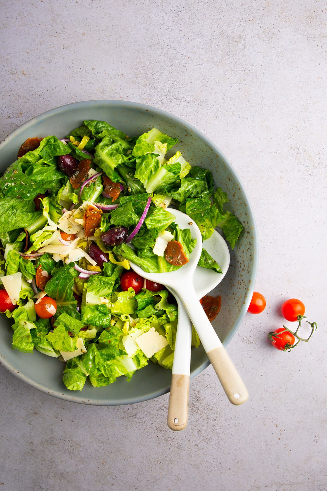

¡Bienvenidos a mi sitio web!
En esta página web creada por María Cristina Guerrero. Fue creada con el fin de mostrar recetas sencillas llenas de sabores. Aquí encontrarás recetas fáciles de preparar, con ingredientes que se consiguen fácilmente en cualquier supermercado cerca de su hogar. Cada receta incluye la lista de ingredientes y las instrucciones paso a paso para que sus platos queden llenos de sabor.
Puedes ver más recetas en esta página web: Recetas

Encontrarás diferentes tipos de platos como:
- Aperitivo: Platos ligeros para comenzar a picar.
- Plato Principal: Platos completos y deliciosos.
- Postre: Plato dulce para alegrar el día.